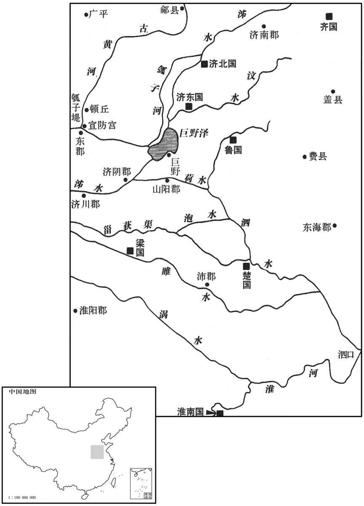

公元前132年资治通鉴：本年记事、原文与白话对照
按原书编年位置阅读；追叙和史论不等于本年发生的事件。白话采用所据译本，缺译不以生成译文补齐。
卷18 · 本年记事
公元前132年 · 汉世宗孝武皇帝元光三年
元光三年〔（己酉、前一三二）〕
本年事件索引（现代整理）
春，河水徙，从顿丘东南流。〔师古曰：顿丘，丘名，因以为县；本卫地也。地理志，属东郡；今则在魏州界。考异曰：汉书武纪云：“东南流入勃海。”按顿丘属东郡。勃海乃在顿丘东。此恐误，今不取。〕夏，五月，丙子，复决濮阳瓠子，〔濮阳县属东郡。服虔曰：瓠子，堤名，在东郡。苏林曰：甄城以南、濮阳以北为瓠子河，广百步，深五丈。水经：瓠子河出濮阳县北十里，即瓠河口。复，扶又翻。瓠，户故翻。考异曰：史记河渠书：“元光中，河决瓠子，东注巨野。”服虔注汉书武纪曰：“瓠子，堤名，在东郡白马。”苏林曰：“在甄城以南，濮阳以北。”将相名臣表曰：“五月，丙子，河决瓠子。”然则瓠子即濮阳县境堤名也。〕注巨野，〔班志，巨野县属山阳郡；大野泽在其北。师古曰：即今郓州巨野县。〕通淮、泗，〔决河之水，由巨野而通泗水，由泗水而通淮也。〕泛郡十六。〔泛，敷剑翻。〕天子使汲黯、郑当时发卒十万塞之，辄复坏。〔塞，悉则翻。复，扶又翻；下同。〕是时，田蚡奉邑食鄃；〔奉，扶用翻。鄃，音输。鄃县属清河郡。〕鄃居河北，河决而南，则鄃无水灾，邑收多。蚡言于上曰：“江、河之决皆天事，未易以人力强塞，〔易，以豉翻。强，其两翻。〕塞之未必应天。”而望气用数者亦以为然。于是天子久之不复事塞也。
春季，黄河决口改道，从顿丘向东南方流去。夏季，五月，丙子（初三），黄河又一次在濮阳县的瓠子决口，注入钜野县，连通了淮河和泗水，十六个郡受水灾。武帝派汲黯、郑当时征发十万役夫堵塞黄河决口，刚刚堵住，就又被洪水冲毁。当时，田的食邑是县；县在黄河北岸，黄河决口向南泛滥，县就不会遭受水灾，食邑收入就会增加。田对武帝说：“长江、黄河的决口都是天意的安排，用人力强行堵塞很不容易，堵住了未必符合天意。”而那些候望云气和使用法术的方士们也认为是这样。这样一来，武帝很长时间不再征发人力从事堵塞决口的工程。

初，孝景时，魏其侯窦婴为大将军，武安侯田蚡乃为诸郎，〔诸郎，诸曹郎也。〕侍酒跪起如子侄；已而蚡日益贵幸，为丞相。魏其失势，宾客益衰，〔师古曰：言素为婴之宾客者，渐以衰退，不复往也。〕独故燕相颍阴灌夫不去。〔燕王定国，王泽之孙也；夫自太仆出相之。班志，颍阴县属颍川郡。相，息亮翻。〕婴乃厚遇夫，相为引重，〔张晏曰：相荐达为声势也。师古曰：相牵引以致于尊重也。为，于伪翻。〕其游如父子然。夫为人刚直，使酒，诸有势在己之右者必陵之；数因酒忤丞相。〔数，所角翻。忤，五故翻。〕丞相乃奏案：“灌夫家属横颍川，民苦之。”〔夫宗族、宾客为权利，横于颍川；小儿歌之曰：“颍水清，灌氏宁；颍水浊，灌氏族。”横，户孟翻。〕收系夫及支属，皆得弃市罪。〔刑人于市，与众弃之，故杀之于市者谓之弃市。景帝中元年，改磔曰弃市。应劭曰：先诸死刑皆磔于市，今改曰弃市，自非妖逆，不复磔也。师古曰：磔，谓张其尸也。弃市，杀之于市也。〕魏其上书论救灌夫，上令与武安东朝廷辨之。〔东朝，谓太后居长乐宫，在未央宫之东也；令于长乐宫见太后，廷辨其是非也。朝，直遥翻，下同。〕魏其、武安因互相诋讦。〔讦，居谒翻。〕上问朝臣：“两人孰是？”唯汲黯是魏其，韩安国两以为是；郑当时是魏其，后不敢坚。上怒当时曰：“吾并斩若属矣！”〔若属，犹言汝辈也。〕即罢、起，入，上食太后，〔上，时掌翻。〕太后怒不食，曰：“今我在也，而人皆藉吾弟；〔晋灼曰：藉，蹈也。藉，慈夜翻。〕令我百岁后，皆鱼肉之乎！”〔师古曰：以比鱼肉而食啖也。〕上不得已，遂族灌夫；使有司案治魏其，得弃市罪。
当初，孝景帝在位时，魏其侯窦婴担任大将军，武安侯田才是个普通的郎官，陪侍窦婴饮酒时，田下跪起立如同儿子、侄子一样；后来，田日益显贵受宠，出任丞相。而魏其侯窦婴失去了权势，依附他的宾客越来越少，唯独原来的燕相、颍阴县人灌夫不离去。窦婴就厚待灌夫，两人互相援引、互相倚重，来往如同父子一样。灌夫为人刚强正直，好借酒使气，对那些权势在自己之上的权贵，必定给予凌辱；他多因酒后闹事冒犯丞相田。丞相就向武帝弹劾：“灌夫家属在颍川郡横行霸道，百姓都被害苦了。”于是收捕灌夫和包括旁支亲属在内的家人，都被判处公开斩首示众的罪名。魏其侯窦婴上书营救灌夫，武帝命令他和武安侯田到太后居住的东宫中，当廷申辩。魏其侯、武安侯就利用这个机会互相诋毁。武帝问朝廷群臣：“他们两人谁对？”只有汲黯认为魏其侯对，韩安国认为两人都对；郑当时本认为魏其侯对，后来不敢坚持。武帝怒骂郑当时说：“我把你这类的人一起斩了！”随即罢朝，站起来，进入内宫，侍奉太后用餐，太后气冲冲地不吃饭，说：“如今我还活着，别人已经在欺负我的弟弟；假若我死了，他们就都来宰杀他了！”武帝没有办法，就下令将灌夫满门处斩；派执法官员审查魏其侯，判处魏其侯斩首示众。